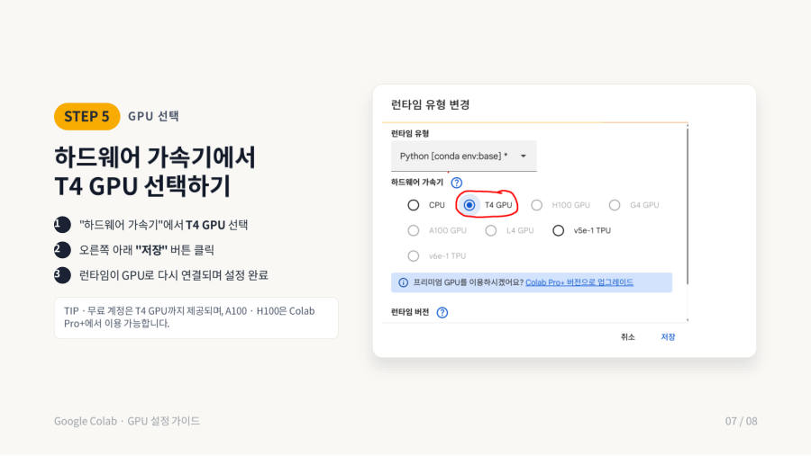

← 보드GPU와 Colab · 6/8
내 컴퓨터에 GPU가 없다면 — Google Colab에서 GPU 켜기 ★
Colab(코랩)은 구글이 인터넷으로 빌려주는 컴퓨터예요. 웹 브라우저로 접속해서 코드를 실행하고, 무료로 GPU도 써 볼 수 있어요. 내 컴퓨터에 GPU가 없어도 돼요. 교수님은 1주차에 "GPU가 없는 학생은 Colab 계정을 만들어 보라"고 했어요.
비유 — 고성능 PC방
내 노트북은 집에 있는 평범한 컴퓨터예요. Colab은 인터넷으로 접속하는 고성능 PC방 컴퓨터를 한 대 빌리는 것과 같아요. 그 컴퓨터에서 내 코드(ipynb 파일)를 실행해요.
설정은 5단계예요.
| 단계 | 할 일 | 자세히 |
|---|---|---|
| 1 | Colab 로그인 | Google 계정으로 로그인해요. 별도 회원가입이 없어요. 브라우저에서 colab.research.google.com에 접속해요 |
| 2 | 노트북 업로드 | Colab 첫 화면에서 "+ 새 노트" 옆의 노트북 업로드를 눌러요 |
| 3 | ipynb 파일 선택 | 둘러보기를 눌러 내 컴퓨터의 .ipynb 파일을 고르거나 창 위로 끌어다 놓아요. 파일이 없으면 "+ 새 노트"로 새로 시작해요 |
| 4 | 런타임 메뉴 열기 | 노트북 위쪽 메뉴에서 런타임 → 맨 아래 런타임 유형 변경을 눌러요 |
| 5 | GPU 선택 | "하드웨어 가속기"에서 T4 GPU를 고르고 오른쪽 아래 저장을 눌러요. 런타임이 GPU로 다시 연결되면 끝이에요 |


잘 켜졌는지는 코드로 확인해요. 새 코드 셀에 torch.cuda.is_available()을 실행했을 때 True가 나오면 GPU가 켜진 거예요. 런타임이 다시 연결되므로 그 전에 실행한 셀이 있다면 처음부터 다시 실행하는 것이 안전해요.
| 코드 줄 | Colab에서 T4 GPU를 켠 뒤 결과 |
|---|---|
torch.cuda.is_available() | True |
device = 'cuda' if ... else 'cpu' | 'cuda' |
x = torch.randn(3, 4).to(device) 뒤 x.device | cuda:0 |
시험엔 이렇게 써요 — 이렇게 고르세요
Colab에서는 Google 계정 로그인 후 런타임 → 런타임 유형 변경에서 하드웨어 가속기를 T4 GPU로 선택하고 저장하면 GPU를 사용할 수 있다. 무료 계정은 T4 GPU까지 제공되고 A100과 H100은 Colab Pro+에서 이용 가능하다.
잠깐 확인 — Colab에서 GPU를 고르는 메뉴 경로는?
상단 메뉴 "런타임" → "런타임 유형 변경" → 하드웨어 가속기에서 "T4 GPU" 선택 → "저장"이에요.
다음 카드 → 종합 — 코드 읽기 연습 ★★
자료: 2주차(+1·3주차) · Week02_Tensor_and_GPU, 구글 Colab GPU 환경 사용법.pdf · 빅분01(1주차)·빅분02(2주차)·빅데이터03(3주차) 녹취